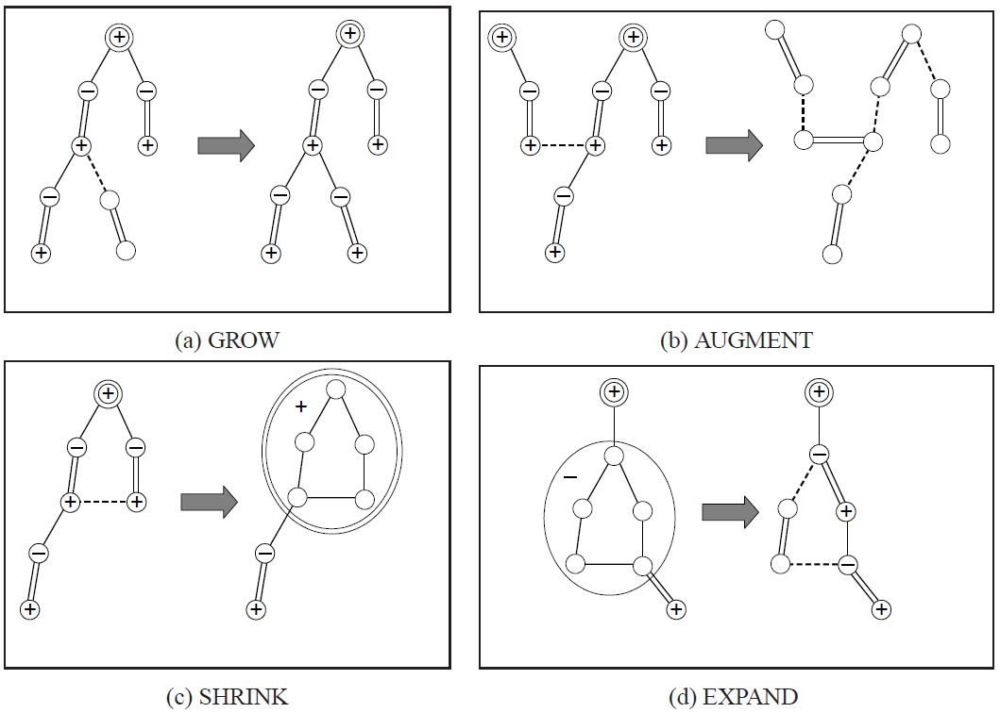
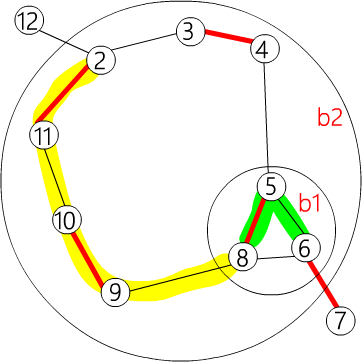
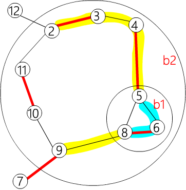

OI Wiki · prijevod · Teorija grafovaOI Wiki · translation · Graph theory
Najveće težinsko sparivanje u općem grafuMaximum weight matching in general graphs
Sadržaj
Ova stranica ide od najvećeg težinskog perfektnog sparivanja u općem grafu do najvećeg težinskog sparivanja u općem grafu (najveće težinsko sparivanje može se dodavanjem bridova težine nula pretvoriti u najveće težinsko perfektno sparivanje).
Predznanje
Cvijet (blossom)
Razlika između sparivanja u općem grafu i sparivanja u bipartitnom grafu jest u tome što graf može sadržavati neparne cikluse. Parne cikluse možemo promatrati kao bipartitni graf.
Algoritam cvjetova (Blossom Algorithm) postupa tako da svaki neparni ciklus na koji naiđe sažme u cvijet (Blossom) i sve vrhove cvijeta proglasi parnim vrhovima. Budući da svi vrhovi cvijeta mogu postati parni, cijeli cvijet možemo izravno sažeti u jedan parni vrh. Pazite: cvijet može sadržavati druge cvjetove.
I ovo se može pretvoriti u linearno programiranje i dualni problem, ali cvjetove treba posebno obraditi.
Oznake vrhova (vertex labeling) i bridovi jednakosti (Equality Edge)
Definirajmo \(z_u\) kao oznaku vrha \(u\) (vertex labeling), s istim značenjem kao oznake vrhova u \(KM\) algoritmu. Brid \(e(u,v)\) zovemo „bridom jednakosti” ako i samo ako je zbroj oznaka vrhova \(u\) i \(v\) jednak težini brida \(e\) (\(z_u + z_v = w(e)\)); tada je oznaka brida \(z_e = z_u + z_v − w(e) = 0\).
Linearni program najvećeg težinskog perfektnog sparivanja u općem grafu
Definicije
Cvijet ima najmanje tri vrha, a nakon sažimanja postaje jedan vrh. Neka je \(O\) skup svih skupova neparne veličine \(≥3\) (sadrži sve cvjetove), a \(\gamma(S)\) označava bridove unutar skupa \(S\).
Dualni problem
Primarni problem
Zatim primarno-dualnom metodom (Primal-Dual) problem pretvorimo u dualni.
Dualni problem
Bridovi s \(x_e=1\) su spareni, a bridovi s \(x_e=0\) nespareni. Kao i u bipartitnom grafu, mora vrijediti \(x_e\in\{0,1\}:\forall e\in E\). Stoga u najvećem težinskom perfektnom sparivanju svi spareni bridovi moraju biti bridovi jednakosti.
Za razliku od bipartitnog grafa, u općem grafu treba obraditi još i \(z_B\). Razmotrimo kad je \(z_B\) veće od \(0\).
Vidi se da je najbolje nastojati držati \(z_B=0\), ali kad nema drugog izbora, ipak treba dopustiti \(z_B>0\). Dovoljno je dopustiti \(z_B>0\) kad je \(x(\gamma(B)) = \left\lfloor \dfrac{|B|}2 \right\rfloor \text{ i } x(\delta(B)) = 1\), jer izvan te situacije \(z_B>0\) nema smisla.
Prema uvjetima komplementarne labavosti vrijede sljedeći odnosi:
-
Za odabrani brid \(e\) nužno je \(z_e=0\).
\[ x_e>0 \longrightarrow z_e=0,\quad \forall e\in E \] -
Za odabrani skup B, \(z_B>0 \longrightarrow x(\gamma(B))= \left\lfloor \dfrac{|B|}2 \right\rfloor\), tj. u svakom skupu \(B\) sa \(z_B>0\) odabrano je onoliko bridova koliko iznosi polovina veličine skupa, odnosno skup \(B\) je cvijet, i uvećavamo odabirom jednog brida cvijeta. Istodobno dodajemo uvjet \(x(\delta(B))=1\), tj. \(z_B>0\) ima smisla samo kad iz cvijeta \(B\) prema van vodi točno jedan brid.
\[ z_B>0 \longrightarrow x(\gamma(B))=\left\lfloor\frac{|B|}2\right\rfloor, x(\delta(B))=1\quad \forall B\in O \]
Pojam „brida jednakosti” spojimo s ranijim algoritmom cvjetova: neprekidno uvećavamo uvećavajućim putovima sastavljenima od „bridova jednakosti”; budući da su svi bridovi kojima uvećavamo „bridovi jednakosti”, i konačno najveće težinsko perfektno sparivanje sastoji se samo od „bridova jednakosti”.
Obrada cvjetova
Kad naiđemo na cvijet, sažmemo ga u jedan parni vrh. Sve vrhove cvijeta proglasimo parnima i postavimo njegov \(z_B=0\).
Budući da nakon sažimanja cvijet pamtimo i razvijamo ga tek kad su ispunjeni određeni uvjeti, cvjetove ne možemo bilježiti na raniji način.
Ako nije drugačije rečeno, prije spomenuti vrhovi uključuju i parne vrhove nastale sažimanjem cvjetova.
Budući da i cvjetovi mogu biti sažeti u vrh i dodani u red, a broj cvjetova nije fiksan, ne možemo kao prije prolaziti svaki vrh i provjeravati postoji li uvećavajući put. Zato pri pretraživanju u širinu (BFS) sve nesparene vrhove moramo odjednom staviti u red.
Tako istodobno nastaje više alternirajućih stabala.
Četiri koraka algoritma
Algoritam se može podijeliti u četiri koraka.
- GROW (brid jednakosti): „bridovima jednakosti” gradimo alternirajuće stablo.
- AUGMENT (uvećanje): nađemo uvećavajući put i uvećamo sparivanje.
- SHRINK (sažimanje cvijeta): sažmemo cvijet u jedan vrh.
- EXPAND (razvijanje): razvijemo cvijet.

U fazi AUGMENT, budući da su svi nespareni vrhovi u različitim alternirajućim stablima, kad se pri uvećavanju spoje parni vrhovi dvaju alternirajućih stabala, to znači da smo našli uvećavajući put.
Nema brida jednakosti za proširenje
Kao i u bipartitnom grafu, može se dogoditi da ne nađemo „brid jednakosti” za proširenje. Tada treba podesiti vertex labeling.
Podešavanje VERTEX LABELINGA
Vertex labeling i dalje mora zadovoljavati svojstvo „veće ili jednako”, postojeći „bridovi jednakosti” ne smiju se promijeniti, a \(z_B\) treba držati što manjim.
Oznake za neparne i parne vrhove
\(u^−\) označava da je \(u\) neparni vrh u alternirajućem stablu.
\(u^+\) označava da je \(u\) parni vrh u alternirajućem stablu.
\(u^\varnothing\) označava da \(u\) nije ni u jednom alternirajućem stablu.
Svako \(B\) u nastavku podrazumijeva se kao cvijet i ujedno označava vrh nastao sažimanjem cvijeta.
I cvjetovi mogu biti neparni ili parni, pa se i na njih primjenjuju oznake \(B^+\), \(B^−\), \(B^\varnothing\) itd.
Neka trenutno imamo r alternirajućih stabala \(T_i=(U_{t_i},V_{t_i}):1\leq i\leq r\); definirajmo
Uočite da je ovdje B vrh nastao sažimanjem cvijeta, pa ima parnost.
Neka je \(d=min(d1,d2,d3)\) i postavimo
Ako se dogodi \(z_B=0(d=d3)\), da bismo spriječili \(z_B<0\), taj cvijet treba razviti (EXPAND). Nakon razvijanja ostaje samo alternirajući put unutar cvijeta, a vrhovi cvijeta koji nisu na alternirajućem putu postavljaju se na neposjećene (\(\varnothing\)).
Tako smo stvorili (barem) jedan novi brid jednakosti, postojeći bridovi jednakosti ostali su netaknuti, zadržano je svojstvo \(z_e\geq0:\forall e\in E\) i \(z_B\) je povećan u najmanjoj mogućoj mjeri, pa možemo nastaviti tražiti uvećavajući put.
Najveće težinsko sparivanje u općem grafu
Dosad smo tražili najveće težinsko perfektno sparivanje; za najveće težinsko sparivanje vertex labelingu treba dodati još jedno ograničenje: za svaki spareni vrh \(u\) vrijedi \(z_u>0\).
Na početku postavimo sve \(z_u=max(\{w(e):e\in E\})/2\).
Vrhovi čiji je vertex labeling \(0\) na kraju postaju nespareni.
Referentni kôd
Radi jednostavnije implementacije, \(z_e\) računamo s težinama bridova pomnoženima s \(2\), pa nema pogrešaka s decimalnim brojevima.
Pohrana
constexpr int INF = INT_MAX;
constexpr int MAXN = 400;
struct edge {
int u, v, w;
// (u,v) je brid težine w
edge() {}
edge(int u, int v, int w) : u(u), v(v), w(w) {}
};
int n, n_x;
// ima n vrhova, numeriranih 1 ~ n
// n_x je trenutni broj vrhova plus cvjetova; brojevi od n+1 do n_x su vrhovi cvjetova
edge g[MAXN * 2 + 1][MAXN * 2 + 1];
// graf je pohranjen matricom susjedstva; cvjetova je najviše n-1, pa je veličina MAXN*
vector<int> flower[MAXN * 2 + 1];
// flower[b] pamti koji su vrhovi u cvijetu b
// vrhove cvijeta pamtimo tako da zapisujemo samo najvanjskije cvjetove unutar njega
Slijedi primjer ugniježđenih cvjetova.

Ovdje je \(\{ 6, 5, 8\} \in b1,\{ b1, 4, 3, 2, 11, 10, 9\} \in b2\). Pohranjeno kao:
flower[b2] = {b1, 4, 3, 2, 11, 10, 9}
flower[b1] = {6, 5, 8}

flower[b2] = {9, b1, 4, 3, 2, 11, 10}
flower[b1] = {5, 8, 6}
int lab[MAXN * 2 + 1];
// lab[u] pamti z_u, lab[b] pamti z_B
int match[MAXN * 2 + 1], slack[MAXN * 2 + 1], st[MAXN * 2 + 1],
pa[MAXN * 2 + 1];
// match[x]=y znači da je (x,y) spareni brid; x i y mogu biti cvjetovi
// slack[x]=u znači da je z(x,u) najmanji među svim bridovima susjednima x
// st[x]=b znači da je cvijet u kojem je vrh x jednak b. Ako je x=b i b<=n, x je
// običan vrh (nije ni u jednom cvijetu); pa[v]=u znači da je u alternirajućem stablu roditelj vrha v jednak u
int flower_from[MAXN * 2 + 1][MAXN + 1], S[MAXN * 2 + 1], vis[MAXN * 2 + 1];
/*
flower_from[b][x]=xs znači da je najveći podcvijet cvijeta b koji sadrži x jednak xs
x je vrh unutar b, xs je cvijet ili vrh unutar b, pri čemu je x=xs ili je x jedan od vrhova u xs
*/
// S[u]={-1: neposjećen, 0: parni vrh, 1: neparni vrh}
// vis se koristi samo pri traženju lca za provjeru je li vrh već posjećen
queue<int> q;
// queue za BFS traženje uvećavajućeg puta

flower_from[b2][6] = b1
flower_from[b2][5] = b1
flower_from[b2][9] = 9
flower_from[b1][6] = 6
i tako dalje
int e_delta(const edge &e) {
// računa ze; radi jednostavnosti sve su težine bridova prethodno pomnožene s dva
// izravno računanje e_delta unutar cvijeta dalo bi pogrešan rezultat
return lab[e.u] + lab[e.v] - g[e.u][e.v].w * 2;
}
void update_slack(int u, int x) {
// ažurira slack[x] pomoću u
if (!slack[x] || e_delta(g[u][x]) < e_delta(g[slack[x]][x])) {
slack[x] = u;
}
}
void set_slack(int x) {
// računa slack[x]; slack[x]=0 znači da je x vrh alternirajućeg stabla
slack[x] = 0;
for (int u = 1; u <= n; ++u) {
if (g[u][x].w > 0 && st[u] != x && S[st[u]] == 0) {
update_slack(u, x);
}
}
}
void q_push(int x) {
// stavlja x u queue; dogovor je da se cvijet ne smije izravno staviti u queue
if (x <= n)
q.push(x);
else {
// ako treba staviti cvijet, u queue moramo dodati sve vrhove izvornog grafa unutar cvijeta
for (size_t i = 0; i < flower[x].size(); i++) {
q_push(flower[x][i]);
}
}
}
void set_st(int x, int b) {
// postavlja cvijet u kojem je x na b
st[x] = b;
if (x > n) {
// ako je i x cvijet, moramo i za vrhove unutar x postaviti cvijet na b
for (size_t i = 0; i < flower[x].size(); ++i) {
set_st(flower[x][i], b);
}
}
}
int get_pr(int b, int xr) {
// xr je vrh u flower[b]; povratna vrijednost pr je njegov položaj
// da bi program radio ispravno, flower[b][0]~flower[b][pr] mora biti alternirajući put u cvijetu
int pr = find(flower[b].begin(), flower[b].end(), xr) - flower[b].begin();
if (pr % 2 == 1) {
// provjeri položaj u cvijetu; ako flower[b][0]~flower[b][pr] nije alternirajući put
// okreni cijeli cvijet i ponovno izračunaj pr
// tako da flower[b][0]~flower[b][pr] bude alternirajući put u cvijetu
reverse(flower[b].begin() + 1, flower[b].end());
return (int)flower[b].size() - pr;
} else
return pr;
}

Ako pozovemo get_pr(b2,11), flower[b2] postaje {9,10,11,2,3,4,b1} i vraća se 2.
Ako pozovemo get_pr(b2,2), flower[b2] postaje {9,b1,4,3,2,11,10} i vraća se 4.
void set_match(int u, int v) {
// postavlja u i v kao spareni brid; u i v mogu biti cvjetovi
match[u] = g[u][v].v;
if (u > n) {
// ako je u cvijet
edge e = g[u][v];
int xr = flower_from[u][e.u]; // nađi u kojem je cvijetu unutar flower[u] vrh e.u
int pr = get_pr(u, xr); // nađi položaj xr i učini 0~pr alternirajućim putem u cvijetu
for (int i = 0; i < pr; ++i) { // zamijeni sparene i nesparene bridove na alternirajućem putu u cvijetu
set_match(flower[u][i], flower[u][i ^ 1]);
}
set_match(xr, v); // postavi (xr,v) kao spareni brid
rotate(flower[u].begin(), flower[u].begin() + pr, flower[u].end());
// na kraju pr postaje baza cvijeta, jer po načinu pohrane flower[u][0] mora biti baza cvijeta u
// pa flower[u][pr] rotiramo na početak
}
}
void augment(int u, int v) {
// uveća u i sve pretke vrha u te postavi (u,v) kao spareni brid
for (;;) {
int xnv = st[match[u]];
set_match(u, v);
if (!xnv) return;
set_match(xnv, st[pa[xnv]]);
u = st[pa[xnv]];
v = xnv;
}
}
int get_lca(int u, int v) {
// nađi lca vrhova u,v u alternirajućem stablu
static int t = 0;
for (++t; u || v; swap(u, v)) {
if (u == 0) continue;
if (vis[u] == t) return u;
vis[u] = t; // ovako ne moramo brisati polje vis
u = st[match[u]];
if (u) u = st[pa[u]];
}
return 0;
}
Dodavanje neparnog cvijeta
void add_blossom(int u, int lca, int v) {
// sažmi cvijet u,v,lca u jedan vrh b
// lca vrhova u,v u alternirajućem stablu je baza cvijeta
int b = n + 1;
while (b <= n_x && st[b]) ++b;
if (b > n_x) ++n_x;
// nađi trenutno neiskorišten broj cvijeta
lab[b] = 0; // postavi zB=0
S[b] = 0; // cijeli cvijet je jedan parni vrh
match[b] = match[lca]; // spareni brid cvijeta je spareni brid baze cvijeta
flower[b].clear();
flower[b].push_back(lca);
for (int x = u, y; x != lca; x = st[pa[y]]) {
flower[b].push_back(x);
y = st[match[x]];
flower[b].push_back(y);
q_push(y);
}
reverse(flower[b].begin() + 1, flower[b].end());
for (int x = v, y; x != lca; x = st[pa[y]]) {
flower[b].push_back(x);
y = st[match[x]];
flower[b].push_back(y);
q_push(y);
}
// svi vrhovi iz b dodani su u flower[b] kružnim redoslijedom, a baza cvijeta je prvi element
set_st(b, b); // za sve elemente unutar cvijeta postavi cvijet na b
for (int x = 1; x <= n_x; ++x) {
g[b][x].w = 0;
g[x][b].w = 0;
}
for (int x = 1; x <= n; ++x) {
flower_from[b][x] = 0;
}
for (size_t i = 0; i < flower[b].size(); ++i) {
int xs = flower[b][i];
for (int x = 1; x <= n_x; ++x) {
// brid između b i x postavi na brid između x i nekog vrha iz b s najmanjim e_delta
if (g[b][x].w == 0 || e_delta(g[xs][x]) < e_delta(g[b][x])) {
g[b][x] = g[xs][x];
g[x][b] = g[x][xs];
}
}
for (int x = 1; x <= n; ++x) {
if (flower_from[xs][x]) {
// ako vrh xs unutar b sadrži x
// tada je flower_from[b][x] jednak xs
flower_from[b][x] = xs;
}
}
}
set_slack(b);
// na kraju obavezno postavi slack vrijednost za b
}
Razvijanje cvijeta
void expand_blossom(int b) {
// kad je b neparni cvijet sa zB=0, b treba razviti
// razvijamo samo b, pa ako b sadrži druge cvjetove
// njih ne treba razvijati
for (size_t i = 0; i < flower[b].size(); ++i) {
set_st(flower[b][i], flower[b][i]);
// najprije za svaki element flower[b] postavi cvijet na njega samog
}
int xr = flower_from[b][g[b][pa[b]].u];
// xr je cvijet unutar flower[b] u kojem je roditelj vrha b na alternirajućem putu
int pr = get_pr(b, xr); // nađi položaj xr i učini 0~pr alternirajućim putem u cvijetu
for (int i = 0; i < pr; i += 2) {
// razvij alternirajući put u alternirajuće stablo
// i stavi parne vrhove alternirajućeg puta u queue
int xs = flower[b][i];
int xns = flower[b][i + 1];
pa[xs] = g[xns][xs].u;
S[xs] = 1;
S[xns] = 0;
slack[xs] = 0;
set_slack(xns);
q_push(xns);
}
S[xr] = 1; // xr je sada neparni vrh ili neparni cvijet
pa[xr] = pa[b];
for (size_t i = pr + 1; i < flower[b].size(); ++i) {
// sve vrhove cvijeta koji nisu na alternirajućem putu postavi na neposjećene
int xs = flower[b][i];
S[xs] = -1;
set_slack(xs);
}
st[b] = 0;
}
Pokušaj uvećanja bridom jednakosti
bool on_found_edge(const edge &e) {
// u BFS-u smo našli brid jednakosti e
// s njim postupamo ovako
// ovdje je u sigurno parni vrh
int u = st[e.u], v = st[e.v];
if (S[v] == -1) {
// v je neposjećen vrh
pa[v] = e.u;
S[v] = 1;
int nu = st[match[v]];
slack[v] = 0;
slack[nu] = 0;
S[nu] = 0;
q_push(nu);
} else if (S[v] == 0) {
// v je parni vrh
int lca = get_lca(u, v);
if (!lca) { // lca=0 znači da su u,v u različitim alternirajućim stablima; postoji uvećavajući put
augment(u, v);
augment(v, u);
return true; // našli smo uvećavajući put
} else
add_blossom(u, lca, v);
// inače su u,v u istom stablu, pa tvore cvijet koji treba sažeti
}
return false;
}
Uvećanje
bool matching() {
memset(S + 1, -1, sizeof(int) * n_x);
memset(slack + 1, 0, sizeof(int) * n_x);
q = queue<int>(); // isprazni queue
for (int x = 1; x <= n_x; ++x) {
if (st[x] == x && !match[x]) {
// sve nesparene vrhove stavi u queue i postavi ih kao parne
pa[x] = 0;
S[x] = 0;
q_push(x);
}
}
if (q.empty()) return false; // svi su vrhovi spareni
for (;;) {
while (q.size()) {
// BFS
int u = q.front();
q.pop();
if (S[st[u]] == 1) continue;
for (int v = 1; v <= n; ++v) {
if (g[u][v].w > 0 && st[u] != st[v]) {
if (e_delta(g[u][v]) == 0) {
if (on_found_edge(g[u][v])) return true;
} else
update_slack(u, st[v]);
}
}
}
// promijeni vrijednosti lab
int d = INF;
for (int u = 1; u <= n; ++u) {
// ovo sprječava da se pojavi lab<0
// čim je neki lab[u]=0, program završava
if (S[st[u]] == 0) d = min(d, lab[u]);
}
for (int b = n + 1; b <= n_x; ++b) {
if (st[b] == b && S[b] == 1) d = min(d, lab[b] / 2);
}
for (int x = 1; x <= n_x; ++x)
if (st[x] == x && slack[x]) {
if (S[x] == -1)
d = min(d, e_delta(g[slack[x]][x]));
else if (S[x] == 0)
d = min(d, e_delta(g[slack[x]][x]) / 2);
}
for (int u = 1; u <= n; ++u) {
if (S[st[u]] == 0) {
if (lab[u] == d) return false;
// ako je lab[u]=0, odmah završi program
lab[u] -= d;
} else if (S[st[u]] == 1)
lab[u] += d;
}
for (int b = n + 1; b <= n_x; ++b) {
if (st[b] == b) {
if (S[st[b]] == 0)
lab[b] += d * 2;
else if (S[st[b]] == 1)
lab[b] -= d * 2;
}
}
q = queue<int>(); // isprazni queue
for (int x = 1; x <= n_x; ++x) {
// provjeri je li nastao uvećavajući put
if (st[x] == x && slack[x] && st[slack[x]] != x &&
e_delta(g[slack[x]][x]) == 0)
if (on_found_edge(g[slack[x]][x])) return true;
}
for (int b = n + 1; b <= n_x; ++b) {
// operacija EXPAND: razvij sve neparne cvjetove s lab[b]=0
if (st[b] == b && S[b] == 1 && lab[b] == 0) expand_blossom(b);
}
}
return false;
}
Glavna funkcija
pair<long long, int> weight_blossom() {
// glavna funkcija; na početku inicijalizacija
memset(match + 1, 0, sizeof(int) * n);
n_x = n; // na početku nema cvjetova
int n_matches = 0;
long long tot_weight = 0;
for (int u = 0; u <= n; ++u) {
// najprije za svaki vrh postavi cvijet na njega samog
st[u] = u;
flower[u].clear();
}
int w_max = 0;
for (int u = 1; u <= n; ++u)
for (int v = 1; v <= n; ++v) {
// kad je u vrh, jedini vrh koji sadrži je on sam
flower_from[u][v] = (u == v ? u : 0);
w_max = max(w_max, g[u][v].w);
// nađi najveću težinu brida
}
for (int u = 1; u <= n; ++u) lab[u] = w_max;
// postavi sve lab = najveća težina brida
// budući da ovdje ze računamo s dvostrukim težinama, ne treba dijeliti s dva
while (matching()) ++n_matches;
for (int u = 1; u <= n; ++u)
if (match[u] && match[u] < u) tot_weight += g[u][match[u]].w;
return make_pair(tot_weight, n_matches);
}
Inicijalizacija
Vrlo važno: prije uporabe obavezno inicijalizirati.
void init_weight_graph() {
// prije unosa bridova u graf obavezna je inicijalizacija
// budući da je riječ o najvećem težinskom sparivanju, nepostojeće bridove postavljamo na 0
for (int u = 1; u <= n; ++u)
for (int v = 1; v <= n; ++v) g[u][v] = edge(u, v, 0);
}
Analiza složenosti
Svaki se cvijet u jednom BFS-u sažima ili razvija samo jednom. Svako sažimanje ili razvijanje cvijeta ima vremensku složenost \(O(|V|)\). Ukupno ima najviše \(O(|V|)\) cvjetova, pa obrada cvjetova traje \(O(|V|^2)\). BFS ima vremensku složenost \(O(|V| + |E|)\). Stoga traženje uvećavajućeg puta ima vremensku složenost \(O(|V| + |E|) + O(|V|^2) = O(|V|^2)\).
BFS se izvodi najviše \(|V|\) puta. Dakle, ukupna vremenska složenost je \(O(|V|^3)\).
Zadaci
Literatura
Contents
This page goes from maximum weight perfect matching in general graphs to maximum weight matching in general graphs (a maximum weight matching can be turned into a maximum weight perfect matching by adding zero-weight edges).
Prerequisites
Blossom
The difference between general graph matching and bipartite matching is that the graph may contain odd cycles. Even cycles can be treated as a bipartite graph.
The blossom algorithm handles an odd cycle by contracting it into a blossom and making all vertices of the blossom even vertices. Since all vertices of a blossom can become even, the whole blossom can be contracted directly into a single even vertex. Note that a blossom may contain other blossoms.
This can also be turned into a linear program and its dual, but blossoms need some special handling.
Vertex labeling and equality edges
Define \(z_u\) as the vertex label (vertex labeling) of vertex \(u\), with the same meaning as the vertex labels in the \(KM\) algorithm. An edge \(e(u,v)\) is called an "equality edge" if and only if the sum of the labels of \(u\) and \(v\) equals the weight of \(e\) (\(z_u + z_v = w(e)\)); in that case the edge label is \(z_e = z_u + z_v − w(e) = 0\).
Linear program for maximum weight perfect matching in general graphs
Definitions
A blossom has at least three vertices and becomes a single vertex after contraction. Let \(O\) be the set of all sets of odd size \(≥3\) (containing all blossoms), and let \(\gamma(S)\) denote the edges inside the set \(S\).
Dual problem
Primal problem
Then the problem is converted into its dual by the primal-dual method.
Dual problem
Edges with \(x_e=1\) are matching edges, and edges with \(x_e=0\) are non-matching edges. As in the bipartite case, we must have \(x_e\in\{0,1\}:\forall e\in E\). Therefore, in a maximum weight perfect matching all matching edges must be equality edges.
Unlike the bipartite case, in general graphs there is also \(z_B\) to deal with. Let us consider when \(z_B\) is greater than \(0\).
One can see that keeping \(z_B=0\) as much as possible is best, but when there is no other way, \(z_B>0\) has to be allowed. It suffices to allow \(z_B>0\) when \(x(\gamma(B)) = \left\lfloor \dfrac{|B|}2 \right\rfloor \text{ and } x(\delta(B)) = 1\), because outside this situation \(z_B>0\) is meaningless.
By the complementary slackness conditions we have the following correspondences:
-
For a chosen edge \(e\), necessarily \(z_e=0\).
\[ x_e>0 \longrightarrow z_e=0,\quad \forall e\in E \] -
For a chosen set B, \(z_B>0 \longrightarrow x(\gamma(B))= \left\lfloor \dfrac{|B|}2 \right\rfloor\), i.e. in every set \(B\) with \(z_B>0\) a number of edges equal to half the size of the set is chosen, which means \(B\) is a blossom, and we augment by choosing one edge of the blossom. At the same time, we add a condition: \(x(\delta(B))=1\), i.e. \(z_B>0\) is meaningful only when exactly one edge leaves the blossom \(B\).
\[ z_B>0 \longrightarrow x(\gamma(B))=\left\lfloor\frac{|B|}2\right\rfloor, x(\delta(B))=1\quad \forall B\in O \]
Combine the notion of "equality edge" with the blossom algorithm from before: keep augmenting along augmenting paths made of "equality edges"; since all edges used for augmenting are "equality edges", the final maximum weight perfect matching still consists only of "equality edges".
Handling blossoms
When a blossom is encountered, contract it into an even vertex. Make all vertices of the blossom even and set its \(z_B=0\).
Since a contracted blossom is stored and only expanded when certain conditions are met, blossoms cannot be recorded the way they were before.
Unless stated otherwise, the vertices mentioned before also include the even vertices formed by contracting blossoms.
Since blossoms may also be contracted into vertices and pushed into the queue, and the number of blossoms is not fixed, we cannot enumerate every vertex to check for an augmenting path as before. Therefore, during the breadth-first search (BFS), all unmatched vertices must be put into the queue.
This creates many alternating trees at the same time.
The four steps of the algorithm
The algorithm can be divided into four steps.
- GROW (equality edges): build alternating trees from "equality edges".
- AUGMENT: find an augmenting path and augment the matching.
- SHRINK: contract a blossom into a single vertex.
- EXPAND: expand a blossom.
In the AUGMENT phase, since all unmatched vertices are in different alternating trees, when augmenting connects even vertices of two alternating trees, an augmenting path has been found.
No equality edge to extend
As in the bipartite case, there may be no "equality edge" to extend with. Then the vertex labeling has to be adjusted.
Adjusting the VERTEX LABELING
The vertex labeling must still maintain the "greater than or equal" property, existing "equality edges" must not be changed, and \(z_B\) should be kept as small as possible.
Notation for odd and even vertices
\(u^−\) denotes that \(u\) is an odd vertex in an alternating tree.
\(u^+\) denotes that \(u\) is an even vertex in an alternating tree.
\(u^\varnothing\) denotes that \(u\) is not in any alternating tree.
Every \(B\) mentioned below is assumed to be a blossom and also stands for the vertex obtained by contracting it.
Blossoms can also be odd or even, so the notation \(B^+\), \(B^−\), \(B^\varnothing\) etc. applies to them as well.
Suppose there are currently r alternating trees \(T_i=(U_{t_i},V_{t_i}):1\leq i\leq r\); let
Note that here B is the vertex obtained by contracting a blossom, so it has a parity.
Let \(d=min(d1,d2,d3)\) and set
If \(z_B=0(d=d3)\) occurs, to prevent \(z_B<0\) this blossom has to be expanded (EXPAND). After expanding, only the alternating path inside the blossom is kept, and the vertices of the blossom not on the alternating path are set to unvisited (\(\varnothing\)).
This creates one (or more) new equality edges, keeps the existing equality edges untouched, maintains the property \(z_e\geq0:\forall e\in E\), and increases \(z_B\) by the minimum amount, so we can continue looking for augmenting paths.
Maximum weight matching in general graphs
What we computed above is a maximum weight perfect matching; to compute a maximum weight matching, one extra constraint is added to the vertex labeling: for every matched vertex \(u\), \(z_u>0\).
Initially set all \(z_u=max(\{w(e):e\in E\})/2\).
Vertices whose vertex labeling is \(0\) will end up unmatched.
Reference code
For ease of implementation, \(z_e\) is computed with edge weights multiplied by \(2\), so no floating-point errors occur.
Storage
constexpr int INF = INT_MAX;
constexpr int MAXN = 400;
struct edge {
int u, v, w;
// (u,v) is an edge with weight w
edge() {}
edge(int u, int v, int w) : u(u), v(v), w(w) {}
};
int n, n_x;
// there are n vertices, numbered 1 ~ n
// n_x is the current number of vertices plus blossoms; numbers from n+1 to n_x are blossom vertices
edge g[MAXN * 2 + 1][MAXN * 2 + 1];
// the graph is stored as an adjacency matrix; there are at most n-1 blossoms, so the size is MAXN*
vector<int> flower[MAXN * 2 + 1];
// flower[b] records which vertices are in blossom b
// vertices of a blossom are recorded by storing only the outermost blossoms inside it
Below is an example of nested blossoms.
Here \(\{ 6, 5, 8\} \in b1,\{ b1, 4, 3, 2, 11, 10, 9\} \in b2\). Stored as:
flower[b2] = {b1, 4, 3, 2, 11, 10, 9}
flower[b1] = {6, 5, 8}
flower[b2] = {9, b1, 4, 3, 2, 11, 10}
flower[b1] = {5, 8, 6}
int lab[MAXN * 2 + 1];
// lab[u] records z_u, lab[b] records z_B
int match[MAXN * 2 + 1], slack[MAXN * 2 + 1], st[MAXN * 2 + 1],
pa[MAXN * 2 + 1];
// match[x]=y means (x,y) is a matching edge; x and y may be blossoms
// slack[x]=u means z(x,u) is the smallest among all edges adjacent to x
// st[x]=b means the blossom containing vertex x is b. If x=b and b<=n, then x is
// an ordinary vertex (not in any blossom); pa[v]=u means in the alternating tree the parent of vertex v is u
int flower_from[MAXN * 2 + 1][MAXN + 1], S[MAXN * 2 + 1], vis[MAXN * 2 + 1];
/*
flower_from[b][x]=xs means the largest sub-blossom of b containing x is xs
x is a vertex inside b, xs is a blossom or a vertex inside b, and either x=xs or x is one of the vertices of xs
*/
// S[u]={-1: unvisited, 0: even vertex, 1: odd vertex}
// vis is only used when finding the lca to check whether a vertex was already visited
queue<int> q;
// queue used by the BFS to look for augmenting paths
flower_from[b2][6] = b1
flower_from[b2][5] = b1
flower_from[b2][9] = 9
flower_from[b1][6] = 6
and so on
int e_delta(const edge &e) {
// compute ze; for convenience all edge weights have been multiplied by two beforehand
// computing e_delta directly inside a blossom would give a wrong result
return lab[e.u] + lab[e.v] - g[e.u][e.v].w * 2;
}
void update_slack(int u, int x) {
// update slack[x] using u
if (!slack[x] || e_delta(g[u][x]) < e_delta(g[slack[x]][x])) {
slack[x] = u;
}
}
void set_slack(int x) {
// compute slack[x]; slack[x]=0 means x is a vertex of an alternating tree
slack[x] = 0;
for (int u = 1; u <= n; ++u) {
if (g[u][x].w > 0 && st[u] != x && S[st[u]] == 0) {
update_slack(u, x);
}
}
}
void q_push(int x) {
// push x into the queue; by convention a blossom must not be pushed directly
if (x <= n)
q.push(x);
else {
// to push a blossom, all original-graph vertices inside the blossom must be added to the queue
for (size_t i = 0; i < flower[x].size(); i++) {
q_push(flower[x][i]);
}
}
}
void set_st(int x, int b) {
// set the blossom containing x to b
st[x] = b;
if (x > n) {
// if x is itself a blossom, the blossom of the vertices inside x must also be set to b
for (size_t i = 0; i < flower[x].size(); ++i) {
set_st(flower[x][i], b);
}
}
}
int get_pr(int b, int xr) {
// xr is a vertex in flower[b]; the return value pr is its position
// for the program to work, flower[b][0]~flower[b][pr] must be the alternating path in the blossom
int pr = find(flower[b].begin(), flower[b].end(), xr) - flower[b].begin();
if (pr % 2 == 1) {
// check its position in the blossom; if flower[b][0]~flower[b][pr] is not an alternating path
// reverse the whole blossom and recompute pr
// so that flower[b][0]~flower[b][pr] is the alternating path in the blossom
reverse(flower[b].begin() + 1, flower[b].end());
return (int)flower[b].size() - pr;
} else
return pr;
}
If we call get_pr(b2,11), flower[b2] becomes {9,10,11,2,3,4,b1} and 2 is returned.
If we call get_pr(b2,2), flower[b2] becomes {9,b1,4,3,2,11,10} and 4 is returned.
void set_match(int u, int v) {
// set u and v as a matching edge; u and v may be blossoms
match[u] = g[u][v].v;
if (u > n) {
// if u is a blossom
edge e = g[u][v];
int xr = flower_from[u][e.u]; // find which blossom inside flower[u] contains e.u
int pr = get_pr(u, xr); // find the position of xr and make 0~pr the alternating path in the blossom
for (int i = 0; i < pr; ++i) { // swap matching and non-matching edges on the alternating path in the blossom
set_match(flower[u][i], flower[u][i ^ 1]);
}
set_match(xr, v); // set (xr,v) as a matching edge
rotate(flower[u].begin(), flower[u].begin() + pr, flower[u].end());
// finally make pr the blossom base, because by the storage convention flower[u][0] is the base of u
// so flower[u][pr] is rotated to the front
}
}
void augment(int u, int v) {
// augment u and all ancestors of u, and set (u,v) as a matching edge
for (;;) {
int xnv = st[match[u]];
set_match(u, v);
if (!xnv) return;
set_match(xnv, st[pa[xnv]]);
u = st[pa[xnv]];
v = xnv;
}
}
int get_lca(int u, int v) {
// find the lca of u,v in the alternating tree
static int t = 0;
for (++t; u || v; swap(u, v)) {
if (u == 0) continue;
if (vis[u] == t) return u;
vis[u] = t; // this way the vis array never has to be cleared
u = st[match[u]];
if (u) u = st[pa[u]];
}
return 0;
}
Adding an odd blossom
void add_blossom(int u, int lca, int v) {
// contract the blossom u,v,lca into a single vertex b
// the lca of u,v in the alternating tree is the blossom base
int b = n + 1;
while (b <= n_x && st[b]) ++b;
if (b > n_x) ++n_x;
// find a currently unused blossom number
lab[b] = 0; // set zB=0
S[b] = 0; // the whole blossom is one even vertex
match[b] = match[lca]; // the matching edge of the blossom is the matching edge of its base
flower[b].clear();
flower[b].push_back(lca);
for (int x = u, y; x != lca; x = st[pa[y]]) {
flower[b].push_back(x);
y = st[match[x]];
flower[b].push_back(y);
q_push(y);
}
reverse(flower[b].begin() + 1, flower[b].end());
for (int x = v, y; x != lca; x = st[pa[y]]) {
flower[b].push_back(x);
y = st[match[x]];
flower[b].push_back(y);
q_push(y);
}
// all vertices of b are added to flower[b] in cyclic order, with the base as the first element
set_st(b, b); // set the blossom of every element inside the blossom to b
for (int x = 1; x <= n_x; ++x) {
g[b][x].w = 0;
g[x][b].w = 0;
}
for (int x = 1; x <= n; ++x) {
flower_from[b][x] = 0;
}
for (size_t i = 0; i < flower[b].size(); ++i) {
int xs = flower[b][i];
for (int x = 1; x <= n_x; ++x) {
// set the edge between b and x to the edge between x and a vertex of b with the smallest e_delta
if (g[b][x].w == 0 || e_delta(g[xs][x]) < e_delta(g[b][x])) {
g[b][x] = g[xs][x];
g[x][b] = g[x][xs];
}
}
for (int x = 1; x <= n; ++x) {
if (flower_from[xs][x]) {
// if the vertex xs inside b contains x
// then flower_from[b][x] is xs
flower_from[b][x] = xs;
}
}
}
set_slack(b);
// finally the slack value of b must be set
}
Expanding a blossom
void expand_blossom(int b) {
// when b is an odd blossom with zB=0, b must be expanded
// only b is expanded, so if b contains other blossoms
// they do not need to be expanded
for (size_t i = 0; i < flower[b].size(); ++i) {
set_st(flower[b][i], flower[b][i]);
// first set the blossom of every element of flower[b] to itself
}
int xr = flower_from[b][g[b][pa[b]].u];
// xr is the blossom inside flower[b] containing the parent of b on the alternating path
int pr = get_pr(b, xr); // find the position of xr and make 0~pr the alternating path in the blossom
for (int i = 0; i < pr; i += 2) {
// expand the alternating path into the alternating tree
// and push the even vertices of the alternating path into the queue
int xs = flower[b][i];
int xns = flower[b][i + 1];
pa[xs] = g[xns][xs].u;
S[xs] = 1;
S[xns] = 0;
slack[xs] = 0;
set_slack(xns);
q_push(xns);
}
S[xr] = 1; // now xr is an odd vertex or an odd blossom
pa[xr] = pa[b];
for (size_t i = pr + 1; i < flower[b].size(); ++i) {
// set all vertices of the blossom not on the alternating path to unvisited
int xs = flower[b][i];
S[xs] = -1;
set_slack(xs);
}
st[b] = 0;
}
Trying to augment along an equality edge
bool on_found_edge(const edge &e) {
// an equality edge e was found during the BFS
// it is handled as follows
// here u is always an even vertex
int u = st[e.u], v = st[e.v];
if (S[v] == -1) {
// v is an unvisited vertex
pa[v] = e.u;
S[v] = 1;
int nu = st[match[v]];
slack[v] = 0;
slack[nu] = 0;
S[nu] = 0;
q_push(nu);
} else if (S[v] == 0) {
// v is an even vertex
int lca = get_lca(u, v);
if (!lca) { // lca=0 means u,v are in different alternating trees, so there is an augmenting path
augment(u, v);
augment(v, u);
return true; // augmenting path found
} else
add_blossom(u, lca, v);
// otherwise u,v are in the same tree and form a blossom, which must be contracted
}
return false;
}
Augmenting
bool matching() {
memset(S + 1, -1, sizeof(int) * n_x);
memset(slack + 1, 0, sizeof(int) * n_x);
q = queue<int>(); // clear the queue
for (int x = 1; x <= n_x; ++x) {
if (st[x] == x && !match[x]) {
// put all unmatched vertices into the queue and mark them even
pa[x] = 0;
S[x] = 0;
q_push(x);
}
}
if (q.empty()) return false; // all vertices are matched
for (;;) {
while (q.size()) {
// BFS
int u = q.front();
q.pop();
if (S[st[u]] == 1) continue;
for (int v = 1; v <= n; ++v) {
if (g[u][v].w > 0 && st[u] != st[v]) {
if (e_delta(g[u][v]) == 0) {
if (on_found_edge(g[u][v])) return true;
} else
update_slack(u, st[v]);
}
}
}
// adjust the lab values
int d = INF;
for (int u = 1; u <= n; ++u) {
// this prevents lab<0 from occurring
// as soon as any lab[u]=0 the procedure ends
if (S[st[u]] == 0) d = min(d, lab[u]);
}
for (int b = n + 1; b <= n_x; ++b) {
if (st[b] == b && S[b] == 1) d = min(d, lab[b] / 2);
}
for (int x = 1; x <= n_x; ++x)
if (st[x] == x && slack[x]) {
if (S[x] == -1)
d = min(d, e_delta(g[slack[x]][x]));
else if (S[x] == 0)
d = min(d, e_delta(g[slack[x]][x]) / 2);
}
for (int u = 1; u <= n; ++u) {
if (S[st[u]] == 0) {
if (lab[u] == d) return false;
// if lab[u]=0, end the procedure immediately
lab[u] -= d;
} else if (S[st[u]] == 1)
lab[u] += d;
}
for (int b = n + 1; b <= n_x; ++b) {
if (st[b] == b) {
if (S[st[b]] == 0)
lab[b] += d * 2;
else if (S[st[b]] == 1)
lab[b] -= d * 2;
}
}
q = queue<int>(); // clear the queue
for (int x = 1; x <= n_x; ++x) {
// check whether an augmenting path has appeared
if (st[x] == x && slack[x] && st[slack[x]] != x &&
e_delta(g[slack[x]][x]) == 0)
if (on_found_edge(g[slack[x]][x])) return true;
}
for (int b = n + 1; b <= n_x; ++b) {
// the EXPAND operation: expand all odd blossoms with lab[b]=0
if (st[b] == b && S[b] == 1 && lab[b] == 0) expand_blossom(b);
}
}
return false;
}
Main function
pair<long long, int> weight_blossom() {
// main function; initialize first
memset(match + 1, 0, sizeof(int) * n);
n_x = n; // no blossoms at the start
int n_matches = 0;
long long tot_weight = 0;
for (int u = 0; u <= n; ++u) {
// first set the blossom of every vertex to itself
st[u] = u;
flower[u].clear();
}
int w_max = 0;
for (int u = 1; u <= n; ++u)
for (int v = 1; v <= n; ++v) {
// when u is a vertex, the only vertex it contains is itself
flower_from[u][v] = (u == v ? u : 0);
w_max = max(w_max, g[u][v].w);
// find the maximum edge weight
}
for (int u = 1; u <= n; ++u) lab[u] = w_max;
// set all lab = maximum edge weight
// since this implementation computes ze with doubled edge weights, no division by two is needed
while (matching()) ++n_matches;
for (int u = 1; u <= n; ++u)
if (match[u] && match[u] < u) tot_weight += g[u][match[u]].w;
return make_pair(tot_weight, n_matches);
}
Initialization
Very important: always initialize before use.
void init_weight_graph() {
// must be initialized before edges are put into the graph
// since this is maximum weight matching, non-existent edges are set to 0
for (int u = 1; u <= n; ++u)
for (int v = 1; v <= n; ++v) g[u][v] = edge(u, v, 0);
}
Complexity analysis
Each blossom is contracted or expanded only once per BFS. Each contraction or expansion of a blossom has time complexity \(O(|V|)\). There are at most \(O(|V|)\) blossoms in total, so handling blossoms takes \(O(|V|^2)\) time. The BFS takes \(O(|V| + |E|)\) time. Therefore, finding an augmenting path takes \(O(|V| + |E|) + O(|V|^2) = O(|V|^2)\) time.
At most \(|V|\) BFS runs are performed. Hence the total time complexity is \(O(|V|^3)\).